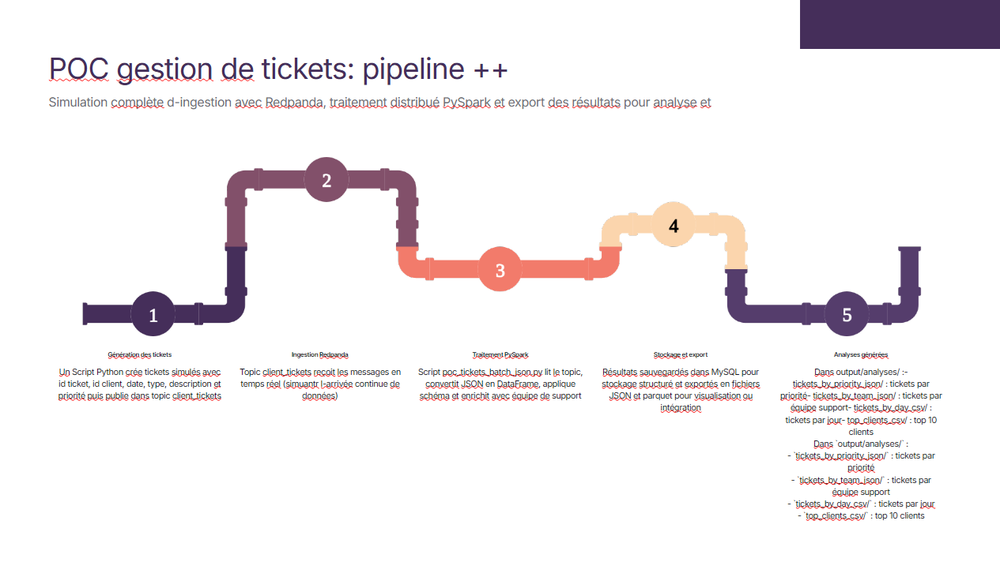

Conception de pipeline streaming + batch
Implementation: ingestion temps reel via topic Kafka et traitement batch snapshot sous PySpark
Business value: combinaison robuste entre capture continue et production d'indicateurs consolides
Implement an industrial data pipeline for support tickets with Kafka/Redpanda streaming and PySpark batch processing, with usable analytical exports.

This section mirrors the competencies described in annexes.md for this project.
Implementation: ingestion temps reel via topic Kafka et traitement batch snapshot sous PySpark
Business value: combinaison robuste entre capture continue et production d'indicateurs consolides
Implementation: schema explicite des tickets, standardisation des champs et derivation equipe_support
Business value: donnees plus interpretable pour routage support et pilotage operations
Implementation: exports Parquet, JSON et CSV pour usages data science, BI et reporting
Business value: interoperation facilitee avec differents outils aval
Implementation: orchestration Docker Compose de Redpanda, producer et job PySpark
Business value: deploiement local reproductible et reduction des ecarts d'environnement
Implementation: tests de connectivite broker, smoke tests PySpark et validation end-to-end conteneurisee
Business value: detection rapide des regressions et securisation des livraisons
Implement an industrial data pipeline for support tickets with Kafka/Redpanda streaming and PySpark batch processing, with usable analytical exports.
Kafka producer, PySpark enrichment job, Parquet/JSON/CSV outputs, Docker orchestration, and connectivity/container testing.